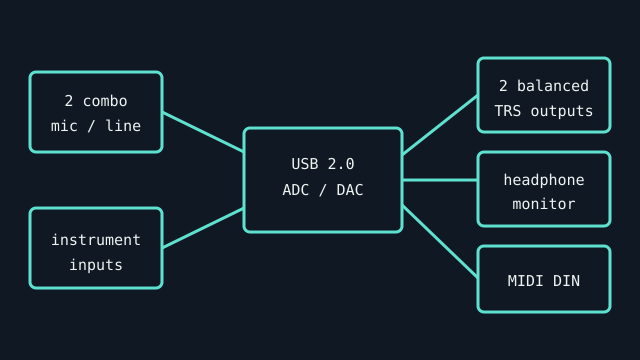

[ INDIVIDUAL COMPONENT // SOUND HARDWARE ]
MOTU M2
Two-channel USB interface with front-panel LCD metering, instrument-capable combo inputs, MIDI DIN, and ESS DAC technology. This record refers to the M2, not the larger M4.

Specifications
| Product ID | MOTU M2 USB audio interface. |
|---|---|
| Bus | USB 2.0; USB-C device connection, bus powered. Connector format does not imply USB 3 transfer requirements. |
| Connectors / I/O | Two XLR/TRS combo inputs, two balanced 1/4-inch TRS line outputs, front headphone output, MIDI 5-pin DIN input/output. |
| Conversion | 24-bit, up to 192 kHz; ESS Sabre32 Ultra DAC technology specified by MOTU. Two simultaneous input and output channels. |
| Drivers / OS | MOTU publishes Windows drivers and Mac software/compatibility details; supported OS versions are tied to the currently listed package. Consult the official download page before deployment. |
| Variant compatibility | USB-C socket connects a USB 2.0 device; use an appropriate data cable, not charge-only cable. M2 has fewer analog I/O than M4. Phantom power is per input-bank behavior in the manual. |
Service & preservation
Keep the supplied USB cable and manuals with the unit. Verify both combo jacks, 48 V status, direct-monitor balance, headphone output, and MIDI ports as separate paths. Document driver build and firmware before changing a functioning production setup.
Primary sources
- MOTU — M2 product specificationManufacturer source for product I/O, conversion, metering, and host requirements.
- MOTU — M Series manualsManufacturer setup, connector, and operating instructions.
- MOTU — M2 downloads and driversOfficial OS-specific download and release notes.